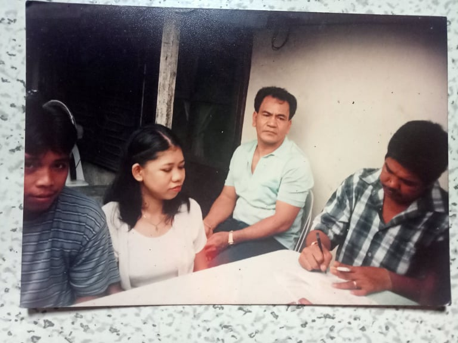
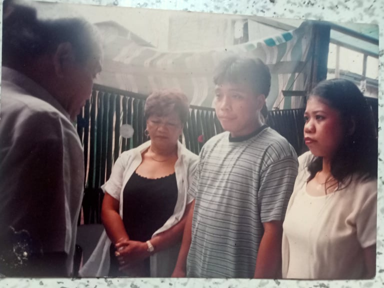
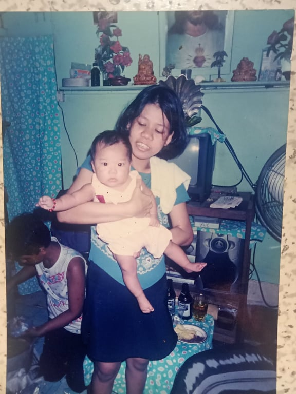
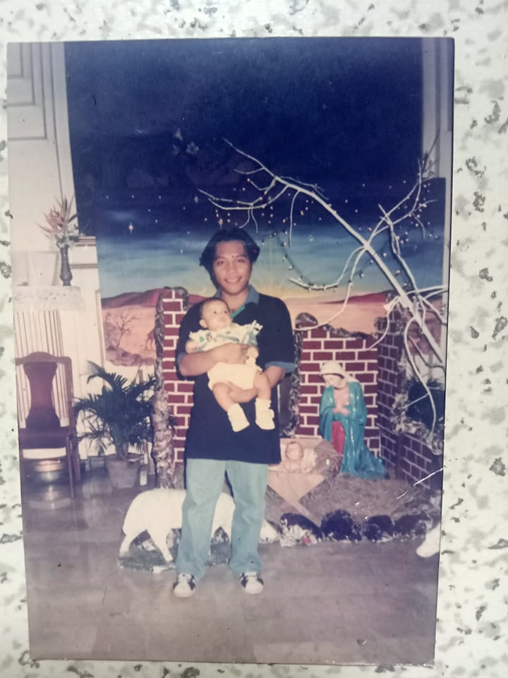

 
An ordinary day for my father, he was getting ready to go to his work. As usual, taking a bath, eating breakfast, and riding a jeepney to go there. He was working at a plastic ware factory. Upon entering, he met and greeted his co-workers that became his friends until today. He was about to go to his station when, he saw a beautiful lady, also about to go to her station. That is het co-worker, that is my mother. At that time, they are both recently hired workers there. He just knew her name by the nametag that they are wearing. He never even approached her before to introduce properly or to hang out with. One thing is for sure at that time, he knew to himself that he likes her. At the end of that day, after the work, his workmates decided to hang out and invited him. They want to celebrate for the recently hired workers so my mother was also coming with them. He decided to join and they all go to a KTV bar. Drinking, eating, and chitchatting, all of them are enjoying the night. My father, decisively, approached my mother, formally introducing and starting a talk with her. After that day, they already hanging out every time. My father having confidence, takes his shot and you can already guess the following details. That’s how my parents met, and that’s the first chapter on how I will be created.